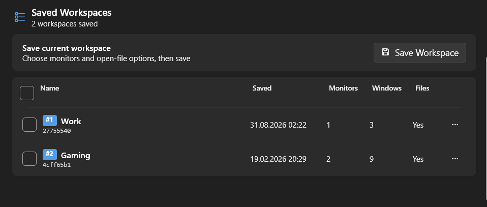
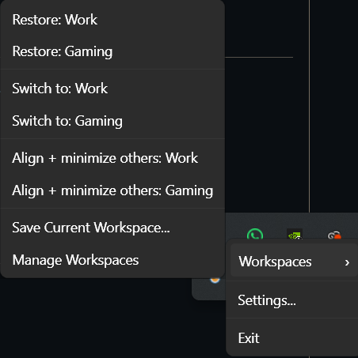

Windows 11 工作区管理器。它恢复的不只是窗口矩形——还包含受支持的文件、文件夹、浏览器会话、资源管理器标签页、终端标签页，以及每个窗口所在的虚拟桌面。
一句话：SuKe 是一个常驻托盘的 Windows 应用。你把当前正在用的一整套工作环境「拍一张快照」存成工作区，之后随时一键恢复——包括窗口在多显示器上的确切位置、打开的文件与文件夹、浏览器标签页、资源管理器标签页、终端标签页，以及它们各自所属的虚拟桌面。
两者都能保存窗口位置。SuKe 的差异点在于保留上下文，而不只是矩形：
把应用放置、受支持的文件、浏览器会话、资源管理器标签页、Windows 终端标签页与虚拟桌面归属一起写进同一份快照。
分辨率、DPI、扩展坞或显示器集合变化时，从「精确像素」自动切换为「语义化布局」（左半屏、三分、居中……）并重新映射。
歧义匹配会先摆在你面前让你确认；同一个活动窗口绝不会被分配给两条保存记录（会话级一对一 HWND 归属不变式）。
精确切换与撤销必须先落一份持久化检查点；关闭窗口只用正常关闭请求，绝不强杀进程。
多显示器、多虚拟桌面统一建模；重建缺失桌面并把窗口送回原处。
Chromium/Firefox 浏览器会话、PWA、资源管理器多标签页、Windows 终端标签页、VS Code 工作区。
Repair Move Existing Resume Launch Fresh Exact Switch Preview Only
强制复用、缺失则启动、总是新开、从不启动、从不关闭、切换期间忽略。
可选常规检查点 + 强制的切换/撤销检查点，支持「撤销的撤销」。
逐条目、逐动作的结果报告；导出时路径/标题/URL/工作区名/标识符/命令行全部脱敏。
扩展坞插拔或分辨率抖动稳定后，可选择「先询问 / 禁用 / 自动+检查点」恢复布局。
工作区可导出为「精确」或「可移植/脱敏」文件，导入总是创建独立副本、绝不覆盖。
9 组合成装置可在不动真实桌面的前提下验证规划器行为，适合 CI。

整个代码库围绕「UI 不含业务逻辑、业务逻辑不碰原生、原生层不含逻辑」这条主线组织。服务端源码再按归属拆成八个职责目录。
| 服务目录 | 职责 |
|---|---|
Services/AppAdapters | 应用专属的采集、身份识别、启动、就绪与校验策略 |
Services/Browser | Chromium/Firefox 连接器、浏览器家族路由、URL、PWA、原生消息 |
Services/Capture | 快照构建、资源发现、标题解析、Jump List |
Services/Desktop | 显示器拓扑、窗口清单/变更、放置几何、离屏救援 |
Services/Restore | 纯规划、匹配、执行阶段、诊断投影、仿真 |
Services/Storage | 原子持久化、仓储、迁移、别名、传输、同步传输层 |
Services/System | 设置、日志、启动、热键、新手引导、可执行文件重绑定 |
Services/Workspace | 采集/恢复门面、检查点、变体、切换、协调 |
这是理解整个项目的关键链路。注意「观测 → 纯规划 → 用户审批 → 过期预检 → 变更执行 → 校验」被拆成了彼此独立的边界。
RestorePlanner 生成不可变的 RestorePlan：每个条目的候选评分、选中匹配、DPI 感知目标位置、要执行的动作、警告与阻断错误。StalePlan，绝不悄悄重规划。CompletedWithFailures。Windows 本身没有通用的「会话恢复」API，所以 SuKe 用应用适配器补齐：
| 目标 | 实现方式 |
|---|---|
| Chromium 浏览器 / PWA | Manifest V3 扩展 + 原生消息（命名管道 SuKe.BrowserBridge），协议 v2 |
| Firefox | 独立包 + 独立管道 SuKe.BrowserBridge.Firefox；持久化 MV2 后台页（MV3 事件页会在等待桌面端请求时卸载端口） |
| 文件资源管理器标签页 | Shell.Application 自动化 + IShellBrowser，在单条专用 STA 线程上串行化；按多重集合消耗位置，只补缺失的标签页，不产生重复 |
| Windows 终端标签页 | 可访问性发现 + 可选的 PowerShell 提示符钩子（标题出现 [WA:...] 标记即生效）；单条 wt 命令恢复整套标签页 |
| 虚拟桌面 | 只用有文档的 IVirtualDesktopManager 接口；从不创建/枚举/命名/切换桌面，失败降级为动作级 Skipped |
| ATLauncher / 打包应用 / Squirrel 更新 | 专用适配器：通过稳定启动器启动；从 AppxManifest.xml 推导 PackageFamilyName!ApplicationId；只在 Squirrel 安装根内解析同类最高版本 |

WM_CLOSE），绝不强制终止应用。%AppData%\SuKe，除非你显式导出。| 项目 | 技术选型 |
|---|---|
应用（src/SuKe） | .NET 8 · C# 12 · WPF（net8.0-windows）· 单文件自包含发布 |
| 依赖（刻意保持极简） | H.NotifyIcon.Wpf 2.1.0、WPF-UI 3.0.5、OpenMcdf 3.1.4 |
测试（tests/SuKe.Tests） | xUnit 2.9.3 · Microsoft.NET.Test.Sdk 17.14.1（Release 下 380 通过 / 0 失败 / 0 跳过） |
| 浏览器连接器 | browser-extension/（Chromium MV3）· firefox-extension/（Firefox MV2 持久后台页） |
| 规模 | 134 个 C# 源文件 · 42 个测试源文件 · 25 个测试装置 JSON |
| 体量最大的核心文件 | LayoutCoordinator、RestorePlanner、VirtualDesktopAssociationService、WorkspaceService、SchemaMigration |
src/SuKe/
├── App.xaml / App.xaml.cs ← 入口、托盘图标接线、服务容器
├── Models/ ← 纯数据类（无逻辑、无依赖）
├── Services/ ← 全部业务逻辑（按上表八个目录拆分）
├── Native/ ← P/Invoke 声明（Windows API 封装）
├── UI/ ← WPF 窗口与对话框
└── Resources/ ← 图标与静态资源
tests/SuKe.Tests/
├── Fixtures/ ← 旧版、当前、损坏与未来版本的 JSON 样本
└── *.cs ← 服务层、规划器、预览与执行器测试/桩件前置条件：.NET 8 SDK，Windows x64。所有命令在仓库根目录执行。
# 跑完整 Release 测试套件（默认不会移动或启动真实桌面窗口）
dotnet test SuKe.sln --configuration Release
# 只跑确定性的恢复仿真子集
dotnet test SuKe.sln --configuration Release --no-restore `
--filter "FullyQualifiedName~RestoreSimulationTests"
# 发布为单个自包含 exe
dotnet publish src/SuKe/SuKe.csproj -c Release -r win-x64 `
--self-contained true -p:PublishSingleFile=true -p:PublishReadyToRun=true
# 在不动桌面的前提下检查某个装置的规划结果（退出码 0 = 期望全部匹配）
dotnet .\src\SuKe\bin\Release\net8.0-windows\SuKe.dll `
--simulate-restore .\tests\SuKe.Tests\Fixtures\restore-simulations\single-monitor.json通过后可执行文件位于 src\SuKe\bin\Release\net8.0-windows\win-x64\publish\SuKe.exe。完整的打包与 Release 产物流程见 构建、测试与发布。
| 维度 | 状态 |
|---|---|
| 最新发布 | v1.7.0「Desktop Context」——终端标签页 + 虚拟桌面 + 临时显示恢复 + ATLauncher 兼容 |
| 自动化 | Release 下 380 通过 / 0 失败 / 0 跳过；无已知漏洞的 NuGet 依赖 |
| 仿真覆盖 | 9 组装置：单/双显示器、负坐标、混合 DPI、缺失与同型号显示器、浏览器/PWA、VS Code 项目、路径别名重映射、对抗性拓扑、损坏输入 |
| 待完成的人工关卡 | WA-006A（真实 Windows 下的 Restore / Exact Switch / Undo / 撤销的撤销）；Firefox 已签名多配置文件往返 |
| 公开工单 | 仅 #12（Squirrel 更新安全路径）仍未关闭，等报告者验证 |
| 明确不做 | 跨设备恢复、云同步、社区模板、通用自动化引擎、定时/解锁触发桌面变更、音频与设备配置、显示器模式切换、公开兼容性数据库 |
完整的官方英文文档已有一套中文译本，与英文原文同步维护；代码标识符、命令、路径与 UI 元素名保留英文以便对照。